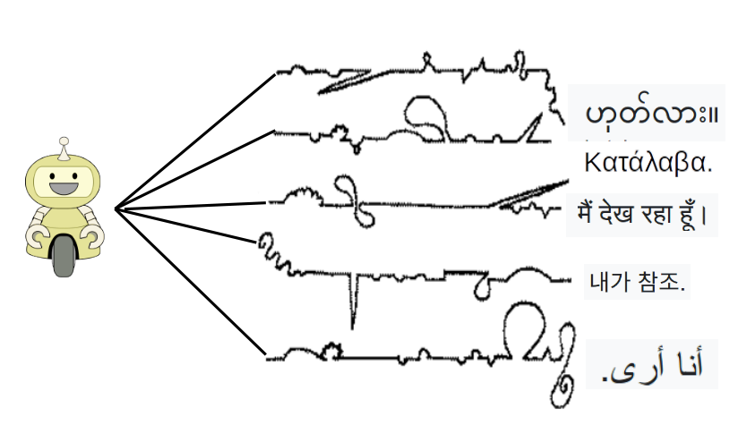
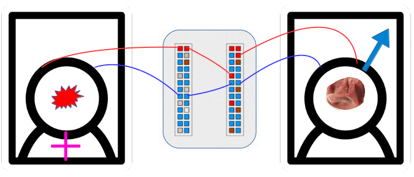
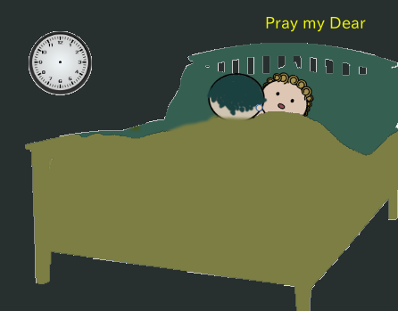

449: '別れた妻にテレパシー'事件¶
{kind=link}
依頼人¶
四階ホステルの客。男性。週末を利用しては、東京周辺のこの種の安宿で人を探している。
依頼内容¶
結婚して二十年ちかいが、子どもはいない。七ヶ月前、家に帰ってみると、妻が彼女の物ほとんどと一緒にいなくなっていた。少し遅れて、妻の母親が忘れ物を取りに来た。いささか放心状態で、いなくなった理由を聞くことすら思いつかず、妻の母親が黙々と荷物をまとめてまた出て行くのを見送った。母親が玄関を出るとき、いずれ妻から書類が届くはずだと、一言だけあった。
妻の移転先は未だに分からない。一方、離婚届の書類も送られて来ない。彼女の実家が近いこともあって、母親と偶然顔を合わせることもあり、そんな時に妻はどうするつもりなのかと漠然と聞いてみるが、母親も分からないのだという。
妻は変わっていて、携帯も持っておらず、親類・友人との連絡も固定電話でなければ葉書ですませていた。いまは住所もわからないのでは、連絡をとる手段もない。一度、実家を訪ねて、玄関先に手紙を置いていった。次に母親と会った機会に聞いてみると、まだそのままそこに置いてあるという。
結婚当初から、妻が自分の最後の女だとは思えなかった。ずっと夢想していたことだが、妻が出て行ったいま、実は、マッチング・アプリでも使って次を探すことを考えている。
それには、いまの中途半端な状態をはやく終わらせたいということを、別れた妻に伝えたい。彼女の母親も知己も非協力的なので、良い方法があれば教えてほしい。
勘の鋭い女で、旅先で食べたい物や見たい所など、よく自分の心を読みあてることがあった。ひょっとして、いまも分かっていて、じりじり先のばしにしているのかとも思う。
調査報告¶
梅干夫婦¶
斎藤茂吉は欧州留学中に妻を呼んで、フランス、イギリス、オランダ、ドイツ、スイス、イタリアと巡った。フランスを出てからすでに二月ほどたち、彼の妻はいつの間にか懐妊していた。二人はミラノからベニスに向かう汽車に乗った。茂吉は、その汽車の中での会話を記している。
「日本の梅干ねえ」
「何だ」
「おいしいわねえ」
斎藤茂吉「妻」（青空文庫）
茂吉の、この文章は、「会話はそのまま途切れてしまったけれども、僕はその時、今までに経験しなかった一つの感情を経験したのであった。」と、続く。
女房とは女房という職業婦人であるが、すでにカケガエのない唯一の職業婦人として
他の女たちと質のちごう存在になっていることが確かなのである。
坂口安吾「安吾人生案内その八 安吾愛妻物語」（青空文庫）
斎藤茂吉夫人、輝子は、経済的に夫に依存する必要が比較的薄かったのかもしれない。そのためか、女房という「職業婦人」にはならなかったように見える。しかし、二人の間には長期の別居を含めて様々な起伏があったのち、晩年の茂吉を輝子は献身的に看護したと伝わる。
{kind=link}
雉子・牡丹之図一部
乳呑子の耳の早さや雉子の声 りん女
蕉門女流のりん女のこの句は、柴田宵曲の「古句を観る」に採られている。春の日、母子渾然一体の状態が、一瞬かすかに解ける。わずかに遅れて、おやキジが鳴いているよと、母親が気づいたのである。
安吾がいう女房の亭主に対する献身は、女性が幼い子どもに対して本来的に持っている察知力を、多くの場合は「職業婦人」としての必要上、亭主に対して応用したものである。男には本来的な能力もなければ、生活上の必要性も薄いので、同様な察知力は持っていないのが普通である。
Brain-(Machine)-Brain¶
ニューラリンクという会社が2016年に設立された。イーロン・マスクの事業のひとつである。2020年に最初の製品として、脳内埋込み型の極微細プローブを発表した。これは、コンピューターチップと極微細ワイヤ電極とを一体化し、そのワイヤ電極数千本をミシンのようなロボットによって生きた人間の脳に高速に挿入するというものである。開頭手術を必要とせず、施術をうける人間の負担を最小限にして、高度なBMI(Brain-Machine Interface)を実現するための技術体系の提案である [M19] 。
BMIについては、それ以前からさまざまな研究開発がなされてきたが、人間の脳から信号を取り出すには、重度の病をもつボランティアに開頭手術をほどこすか、頭の外から磁気や超音波を用いるほかなかった。ニューラリンクの技術は、マスクの他の事業と同様、他にも誰か想像することはできたかもしれないが、本当に実行に移すことは予想できなかった類のものである。
しかし、ニューラリンクの技術に限らずとも、遠からず、人の脳から直接に情報を得たり、五感を介さずに人の脳に直接に情報を渡すことが可能になるのはまちがいない。ごく限定的にはすでに実現されているといっても良い。
{kind=link}
BMIとは、脳から得た「信号」を「機械」が学習によって特定の「情報」内容に結びつけることを可能とする技術である。たとえば、BMIによって、脳の信号から発話を合成するこころみがある。過去の研究から、脳のどこがどんな機能にかかわっているかは、分かってきている。脳の次の三領域、
発声における筋肉の協調運動制御に関わる領域 [Inoue19]
音の感覚や音声言語処理を担う領域
意味処理、音韻処理や文法処理に関わる領域
から拾った信号を、発話音声と付きあわせ、機械に学習させる [Anum19] 。やがて、特定の試験参加者の脳の信号から、発しようとしている音声をある程度の精度で推測し、音声合成できるようになる。
つまり、脳が発話を意図し、機械がそれを推定し、音声として合成する。まだ相当に遠いとはいえ、この種の技術をさらに進めていけば、一人の脳がイメージした発話を、ほぼ同時に、地球の反対側にいる別の脳に送ることも、まったく不可能とは言えない。
ここで、ひとつの思考実験をしてみる。
晩年の茂吉と輝子に別々の室にすわってもらい、二人をこの装置でつないでみる。茂吉にいくつかの絵を見せて、順にそれが何かを言ってもらう。中の一枚は、梅干の絵である。「梅干」と発したとき、茂吉の頭にはふと若いころのヨーロッパ旅行の印象がよみがえるかもしれない。そのとき、輝子の頭には、「梅干」という言葉だけではなくて、イタリアの車窓風景や隣にすわっていた茂吉の姿がよみがえっただろうか。
ここには、 相互理解とは何か という問題と、 男女の関係の非対称性 の問題との二つがある。
{kind=link}
途中の景色¶
白玉か何ぞと人の問ひしとき露と答へて消えなましものを
図のA点を、我々が思考を開始する何らかの経験的事実とする。Z点をそこから合理的に推論される現実的な結論とする。（我々が同じ出発点から同じ結論を導くなら）私たちはみな実質的に同じ考えを持っていたと言える。しかし、私たちの一人ひとりが隣の人の心の中に入ることができたとしたら、他人の見てきた風景が自分のそれといかに違っているかということに、おそらく計り知れないほど驚くことだろう。(William James, "The Principles of Psychology")
ジェームズが言うように、「ひとつの心と別の心とのあいだにある裂け目こそ自然界でもっとも深い裂け目である」。そして、多くの場合、二つの心のあいだで実際に大事なのは、必ずしも結論ではなくて、景色の方である。より正確には、各個の中で「景色」の連続性を保証している、いくつかの経過点が共有されているという感覚である。それがあれば、他はすべて違っていても、相互理解の感覚を得ることができる。
つやつや女房¶
今物語 第36話
鎌倉武士 入道して 高野の蓮花谷に おこなふ（行う） ありけり
この者が ぬる（寝る）所にて よなよな（夜な夜な）女と物語をしける をと（音）のしければ
具したりける弟子ども おほかた心えがた（難）くて
びんぎ（便宜）のありけるに ある弟子 この入道にたづね（尋ね）たりけれは
さる事あり わが女のかまくら（鎌倉）にありしが よなよなこれへ くるなり
それに何事もいひあはせ 又 ふるさとの事の おぼ(覚)つかなさもかたり
世間の事もはからひ などしてあるなり と いひければ
弟子 いふばかりなく 不思議に覚て
不思儀の余に 空阿弥陀仏に ありままに申ければ
空阿弥陀仏 うちあむ(案)じて
さる事も おぼえ（覚え）あり
此女 いたく恋しく思ふにより
たましゐなどの かよ（通）ふにこそ
この定ならばは 臨終のさまたげ（妨げ）にも 成なむず
いそぎ いのる（祈る）べきぞ
とて いのられけり
ある時に 念仏にて祈てみむ とて
蓮花谷のひじり（聖） 三四十人ばかり めぐり（廻り）ゐて
この入道をなかに すへて念仏をせめふせて 申たるに
入道も おなしく申けるが
空阿弥陀仏の秘蔵の本尊の 帳にいりたるが おはしましける
そのかたを つくづくとまもりて おそろしげにおもひて
わなわなと ふるひければ
空阿弥陀仏 よ（寄）りて など おそろしげには おもひたるぞと と（問）へば
その御本尊の御前に かの女房が まうできて
我を よにうらめしげに みて候か など候らん
あまりにおそろしく み申ければ
その時 空阿弥陀仏
門門不同八万四
為滅无明果業因
利剣即是弥陀号
一声称念罪皆除
と たかく誦せられたりければ
この女の かほの中より二にわれて ち（散）るやうにみえて うせにけり
これをは 人はみ（見）す たた入道はかり みて
いとど おそろしくて つんつんと かみ（上）へ おど（踊）りたるが
そののちは もとの心になりて おこなひにけり
念仏のちからの たうとき事
いとど 人々 たうと（尊）びあひけり
ほんたいの女は つやつや さる事なくて
もとのやうに かまくらにあり とぞ きこえし
天魔のしわざ（仕業）か 又 女の恋しと思ひけるがゆへ（故）にか
いと ふしぎ（不思議）なり
{kind=link}
元鎌倉武士は、仏道に入るために捨ててきた妻からのテレパシーを感じたのだろうか。夜な夜な、妻の幻が枕元に座り込んでは、生活の悩みを相談する。高僧が祈祷して邪気を退散させる。高野山でこんな異常な事件があったというのに、鎌倉の元女房はといえば、「つやつや、さる事なくて」(まったくそんな様子もなくて)、ふつうに生活していたというのである。
ここで表現されているのは、男性にとって、女性が必然的に持つことになる三つの関係性なのだと言えます。
すなわち、産んだ者であり、連れ合いであり、壊す者である女性です。
あるいは、男の人生の中で母のイメージが変化していく三つの形 ー
母そのもの、母のイメージによって選んだ女、そして最後に、彼の還るべき母なる大地です。
老人は、最初に母親から受けたような、女性の愛をむなしく探します。
運命の女性の三人目、無言の死の女神だけがその腕の中に彼を抱きとめてくれるのです。
ジークムント・フロイト、「三つの小箱のモチーフ」
これは、フロイトによるリア王の分析の結語である。平たく言えば、男性にとっての「女」は、彼がどんなに迷走したとしても、出発点であり終着点である。しかし、女性にとっての「男」は、父親か、夫か、恋人かのいずれかであり、彼女がいっとき深く迷うことがあるとしても、それぞれは通過点である。このような男女の本質的な非対象性が、さまざまな悲劇や喜劇を生み出してきた。
{kind=link}
トリストラム・シャンディ懐胎の夜のことである。
「ねえ、あなた」と、母が言ったそうです。「時計をまくのを忘れなかった？」
いつかテレパシー技術が実現したとしても、現人類未生以前、さらに遥かに遡る、この非対称性が解消されることはないように思える。あるいは、生物と機械とのさかいめがほとんど消えてしまうようなときが来ても、この非対称性が消えることはないかもしれない。
2021年8月30日
報告書欄外メモ¶
しかし、相互理解が成立することは、それほど重要なのだろうか。
彼等は皆自家随意の空気中に生息して、些（いささか）の統一なき事、
恰（あたか）も越人と秦人が隣り合せに世帯を持ちたるが如く、
風（ふう）する馬牛も相及ばざるの勢なり。
夏目漱石、「トリストラム、シヤンデー」
強いて相互理解を欲することもなく、各個が「自家随意の空気中に生息」することを許し合える世界は、それはそれでひとつの理想郷である 2 。
- M19
技術の詳細は、2019年9月のマスクの論文 JMIR誌プレプリント 等にある。
- Inoue19
井林賢志、「皮質脳波・局所電場電位・単一ニューロン活動に基づく発声時脳活動の復号化に関する研究」、東京大学博士論文、公開日 2019-09-19.
- Anum19
- 1
- 2
ここで漱石が述べているのと同様なことを、プリーストリーが オーステン挿絵付「トリストラム・シャンディー」への序 でもう少し精細に分析している。